Префектура Симанэ · Цувано и Хамада · маршрут
Ивами за три дня: Цувано, Хамада и Масуда через кагуру, бумагу и черепицу
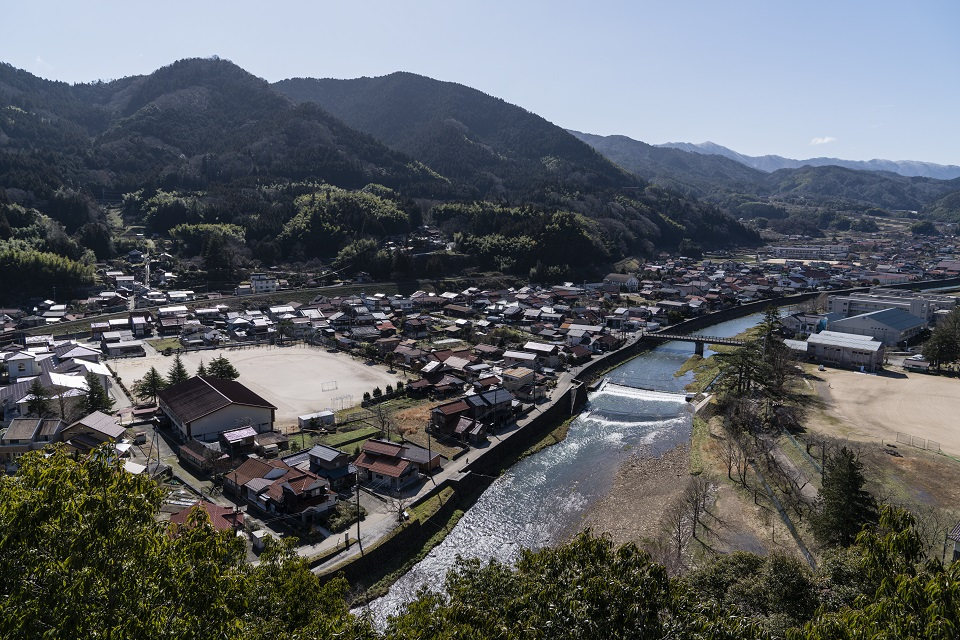
Ивами, западная часть префектуры Симанэ, лежит между Японским морем и горами. За три дня здесь можно увидеть ночное представление кагуры, сделать лист бумаги своими руками, переночевать в старом купеческом доме и понять, почему местные крыши такого красно-бурого цвета.
Край
Ивами: мифы, ремёсла и море
Ивами занимает запад префектуры Симанэ. Это старая провинция с собственной историей и культурой, которая сложилась между побережьем Японского моря и горами Тюгоку. Главной её гордостью считается Ивами-кагура, священные танцы в масках по сюжетам японских мифов. Кагура здесь не музейный жанр: местные труппы выступают каждую неделю, а в последние годы ставят спектакли вместе с известными поп-артистами.
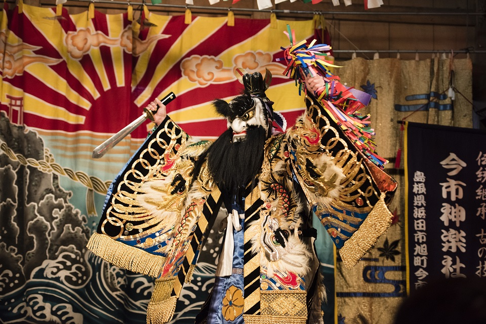
За кагурой стоят мастера: одни вырезают маски, другие шьют костюмы с тяжёлой вышивкой, третьи делают бумагу, из которой клеят маски и тело огромного змея. Ивами к тому же славится едой. Море, горы и реки дают рыбу, свинину и овощи, а местные повара умеют обращаться с ними по-новому. И наконец, это край ремёсел, где старую технику используют для новых вещей.
Маршрут рассчитан на три дня: Масуда и горы Оонан в первый день, Цувано и Хамада во второй, Хамада и снова Масуда в третий.
День 1
Масуда, Мисуми и Оонан
Обед в «Тагосаку»
От аэропорта Хаги-Ивами до первой остановки около 10 минут на машине. «Тагосаку» в городе Масуда работает с 1967 года, а известный знаток японских идзакая когда-то назвал его лучшим идзакая страны. В обед здесь подают сасими-тэйсёку: свежую рыбу из Японского моря, домашний тофу и конняку. Такой обед стоил 2160 иен в 2018 году.
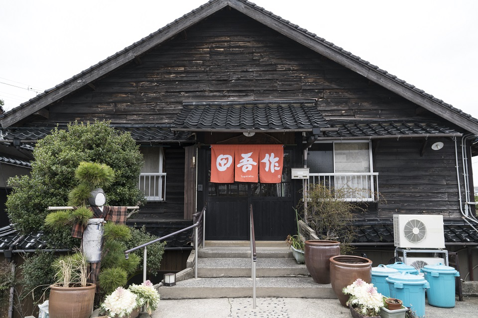
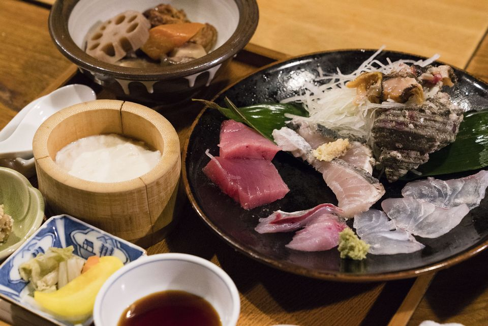
«Тагосаку»
- Адрес
- префектура Симанэ, Масуда, Акаги-тё, 10-3
- Телефон
- +81 856-22-3022
- Часы работы
- 12:00–24:00 (последний заказ в 23:00)
- Выходные
- нерегулярные
Бумага сэкисю васи
Следующая остановка находится в Мисуми, на территории города Хамада. Сэкисю васи, бумагу ручной работы, делают в Ивами около 1300 лет. Она очень прочная, поэтому из неё клеят маски для кагуры и тело огромного змея для спектаклей. В «Доме бумаги сэкисю васи» есть зал об истории ремесла, магазин изделий мастеров и мастерская, где можно самому вычерпать лист из чана.
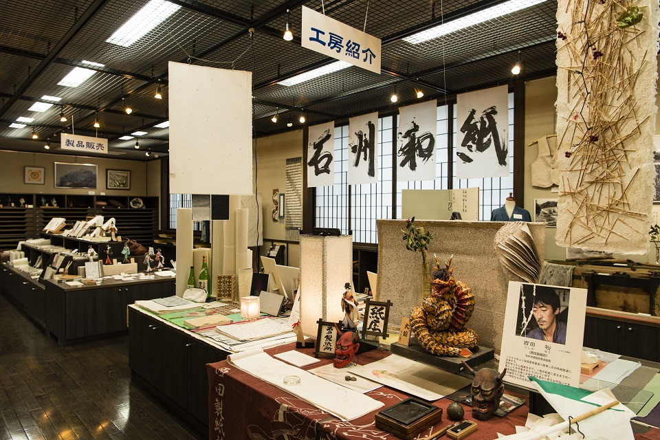
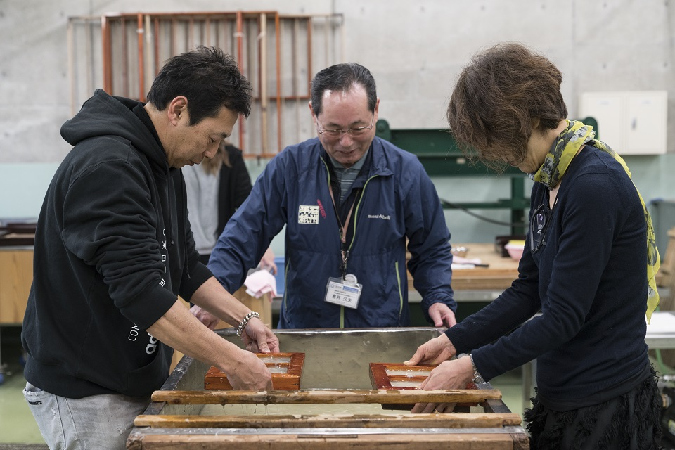
Дом бумаги сэкисю васи
- Адрес
- префектура Симанэ, Хамада, Мисуми-тё, Фуруитиба, 589
- Телефон
- +81 855-32-4170
- Часы работы
- 9:00–17:00
- Выходные
- понедельник (если праздник, то следующий рабочий день)
- Цены / Вход
- бесплатно
Рядом можно передохнуть в джелатерии «Каэдэ», открытой в 2013 году. Мороженое делают из местных продуктов, например из молока фермы в Масуде. Половинная порция стоила от 290 иен в 2018 году.
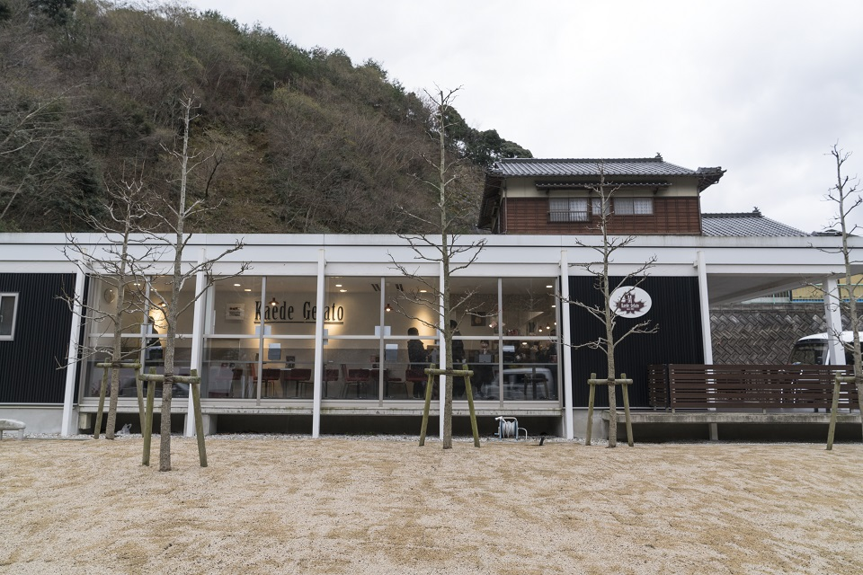
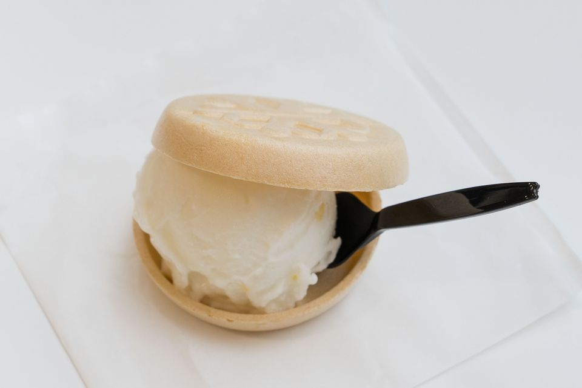
Джелатерия «Каэдэ»
- Адрес
- префектура Симанэ, Хамада, Мисуми-тё, Мукаинота, 721-7
- Телефон
- +81 855-32-5200
- Часы работы
- 11:00–18:00, в субботу, воскресенье и праздники 10:00–17:00
- Выходные
- вторник (если праздник, то открыто)
Ужин в горах Оонан
Вечером дорога уходит в горы Тюгоку, в посёлок Оонан, который называет себя «городом гурманской еды класса А». Ресторан «Адзикура» занимает старый перестроенный амбар-кура и готовит итальянскую кухню из продуктов посёлка. Ради него приезжают и из других префектур. Главным блюдом в тот вечер была запечённая свинина «Ивами», а овощи от соседних фермеров оказались не менее вкусными. На ночь можно ехать в Цувано.
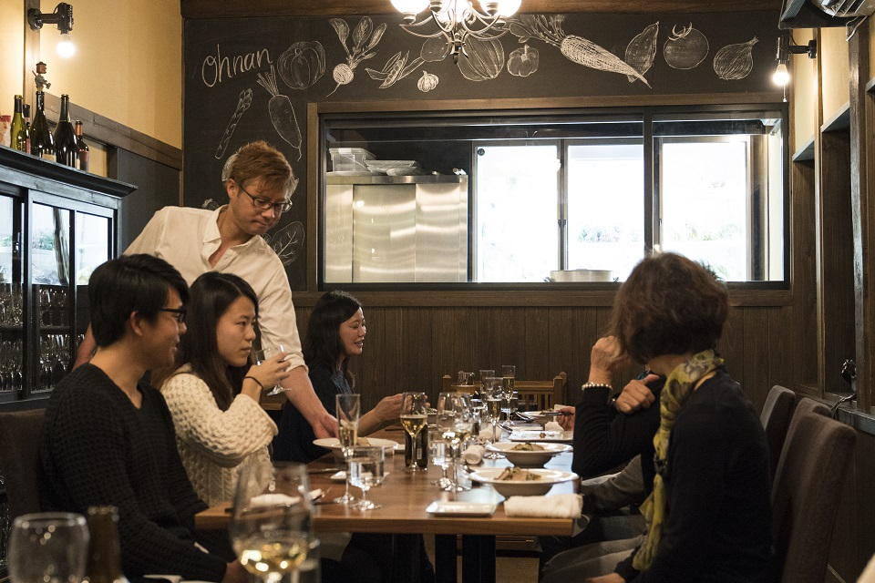
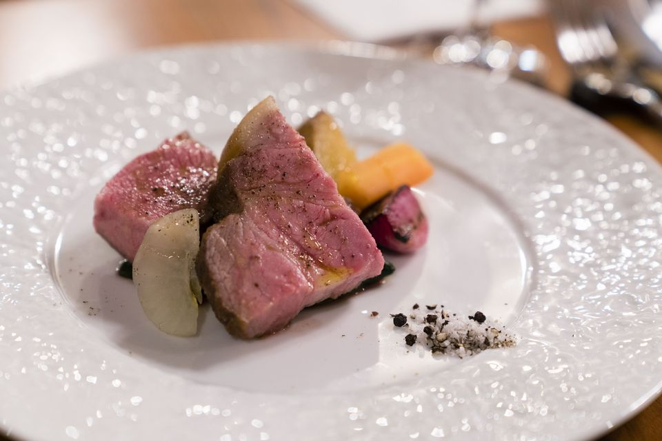
«Адзикура»
- Адрес
- префектура Симанэ, уезд Оти, Оонан, Яками, 3123-4
- Телефон
- +81 855-95-2093
- Часы работы
- 11:00–15:00 (последний заказ в 14:00), 17:30–22:00 (последний заказ в 20:00, ужин по записи накануне)
- Выходные
- среда
- Цены / Вход
- обед от 1944 иен, ужин от 4320 иен
День 2
Цувано и Хамада
Святилище Тайкодани Инари
Цувано, горный городок в долине, называют «маленьким Киото Санъина». Когда-то это был призамковый город княжества Цувано, которым правил род Камэи. Утро лучше начать со святилища Тайкодани Инари на склоне над городом: оно принимает больше всего паломников в Ивами и считается одним из пяти главных святилищ Инари в Японии. К нему ведёт дорожка под туннелем из множества красных ворот-тории.
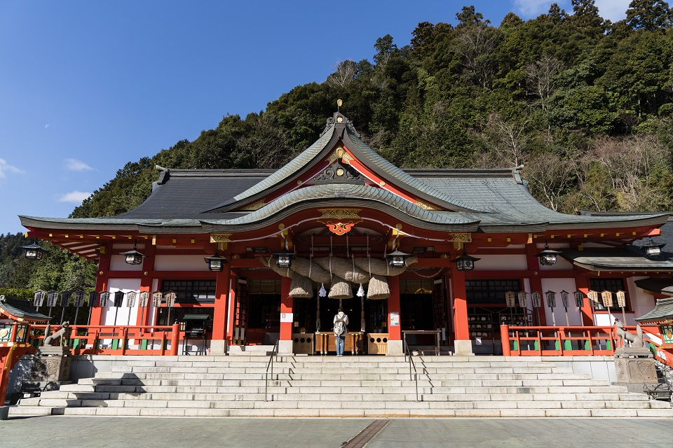
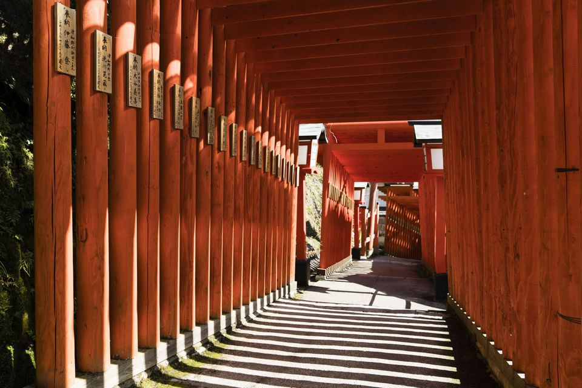
Святилище Тайкодани Инари
- Адрес
- префектура Симанэ, уезд Каноаси, Цувано, Усирода, 409
- Телефон
- +81 856-72-0219
- Часы работы
- 8:00–18:00
Улица Хонмати и ночлег в старом доме
Спустившись в город, идите по улице Хонмати. Вдоль неё стоят старые дома винокурен сакэ и лавок лекарственных трав под черепичными крышами.
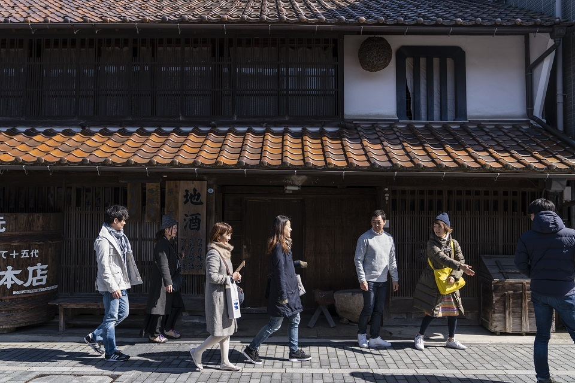
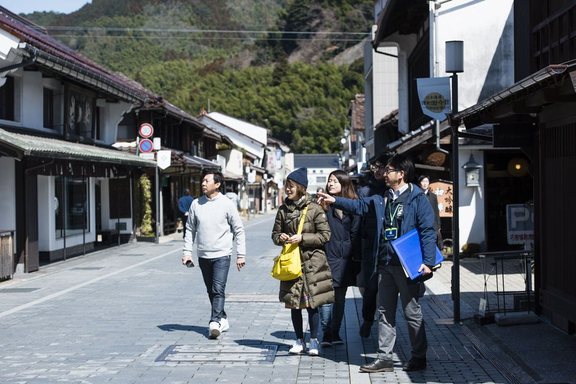
В Цувано можно не только гулять среди старых домов, но и жить в них. Два городских дома, «Эбису-тё» и «Камисин-тё», перестроили под гостевые дома. Старые балки и планировка остались, а кухня и ванная стали современными.
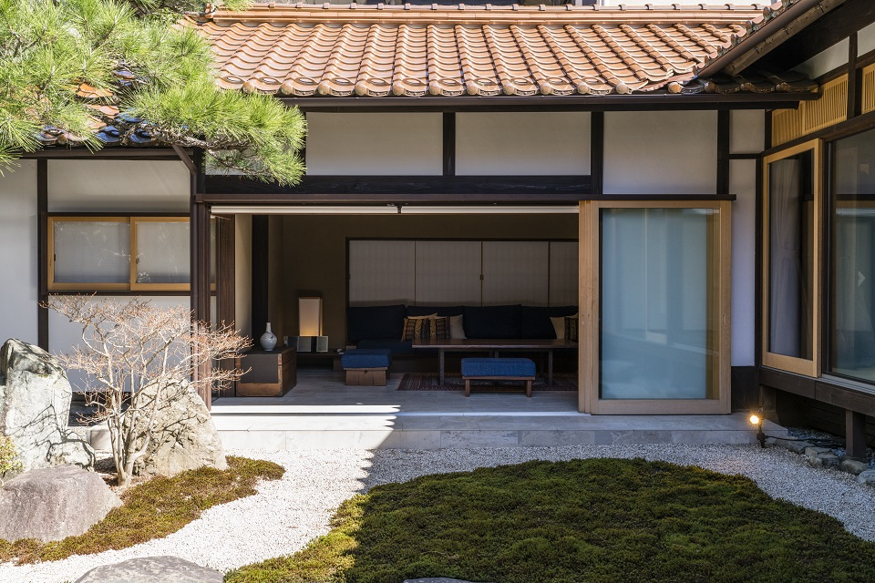
Гостевые дома «Эбису-тё» и «Камисин-тё»
- Адрес
- префектура Симанэ, уезд Каноаси, Цувано, Усирода, и-71-2
- Телефон
- +81 856-72-1771 (туристическая ассоциация Цувано)
- Цены / Вход
- от 24 000 иен за дом
- Сайт
- tsuwano-stay.jp
На обед стоит зайти в «Артиджано» на той же улице Хонмати. Здесь готовят итальянскую кухню из местных овощей.
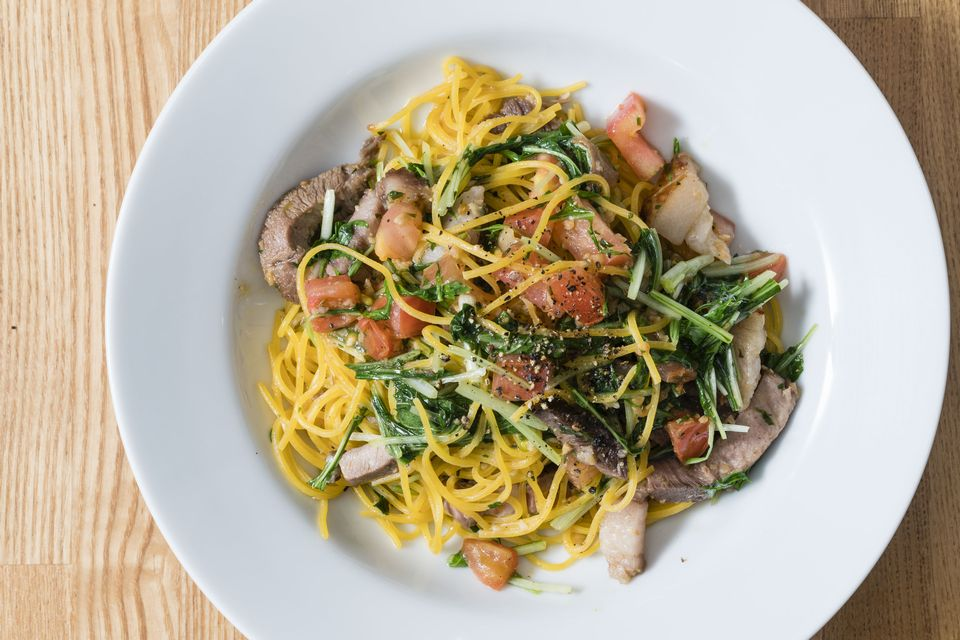
«Артиджано»
- Адрес
- префектура Симанэ, уезд Каноаси, Цувано, Усирода, ро-194-3
- Телефон
- +81 856-72-3365
- Часы работы
- обед 11:30–14:30 (последний заказ в 14:00), ужин 18:00–22:00 (последний заказ в 21:00)
- Выходные
- понедельник
Мастерская масок кагуры
После обеда маршрут уходит в Хамаду. В мастерской масок Кацуро Какиты вырезают маски для Ивами-кагуры. Часть их делают по заказу трупп, часть продают всем желающим.
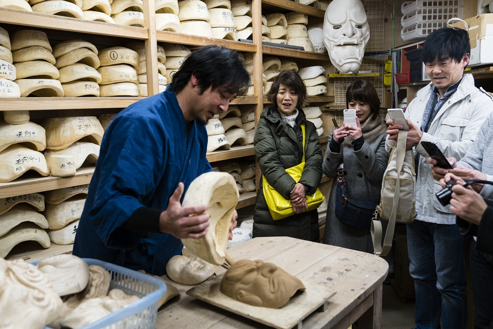
Мастерская масок Кацуро Какиты
- Адрес
- префектура Симанэ, Хамада, Ацута-тё, 636-60
- Телефон
- +81 855-27-1731
- Часы работы
- 9:00–18:30
- Выходные
- среда
Онсэн Мимата и ночная кагура
Онсэн Мимата называют источником красоты и гладкой кожи, и после долгого дня здесь хорошо отдохнуть. Вечером едут в город, в святилище Санку: здесь каждую субботу выступают труппы Хамады, их около 40, и каждую неделю на сцене другая.
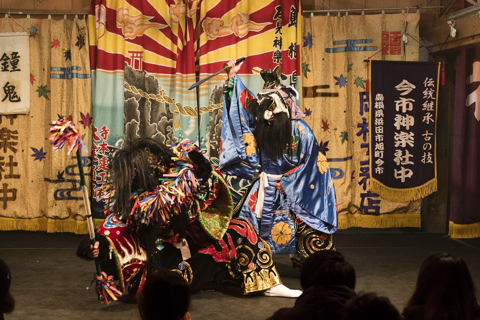
В тот вечер выступала труппа Имаити с двумя спектаклями. В «Эбису» смешной бог удачи ловит рыбу, и зал смеётся. В «Сёки» герой сражается с демоном, и зрители замирают. После спектакля можно примерить роскошные костюмы и сфотографироваться.
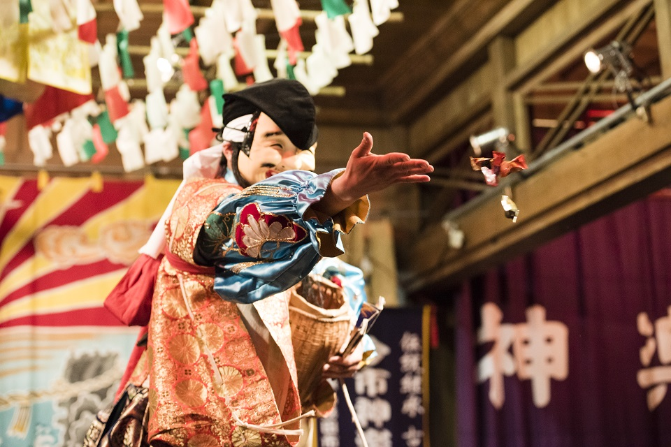
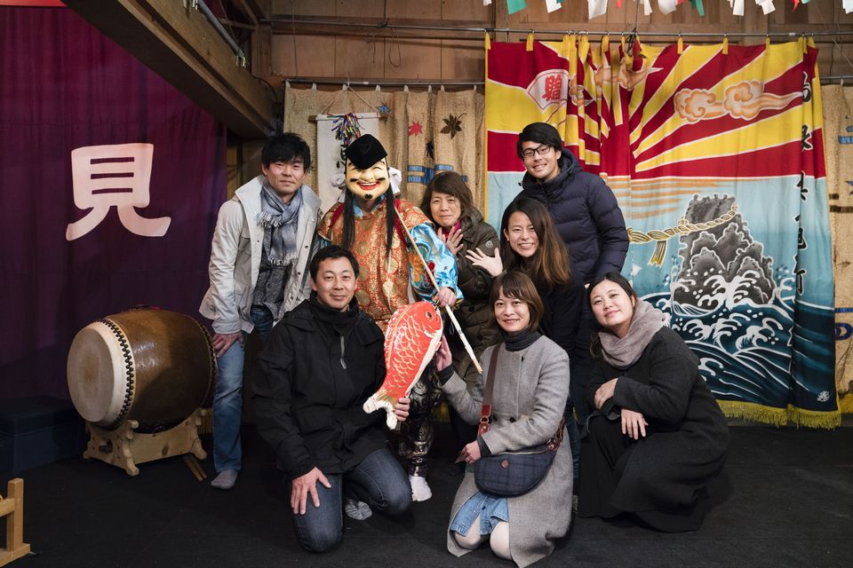
Кагура в святилище Санку
- Адрес
- префектура Симанэ, Хамада, Аиои-тё, 1571
- Телефон
- +81 855-24-1085 (туристическая ассоциация Хамады)
- Даты
- каждую субботу, 20:00–21:00
- Цены / Вход
- 500 иен, детям до 15 лет бесплатно
Ночь можно провести в рёкане «Яманэ» в Мимате. Вода здесь идёт в ванны прямо из источника, без повторного подогрева и очистки. Ночлег с ужином и завтраком стоил от 11 000 до 16 000 иен без налога и сервисного сбора в 2018 году.
Рёкан «Яманэ»
- Адрес
- префектура Симанэ, Хамада, Канаги-тё, Оибара, 7-1
- Телефон
- +81 855-42-1337
- Цены / Вход
- с ужином и завтраком от 11 000 до 16 000 иен (без налога и сервисного сбора)
- Заезд / выезд
- 16:00 / 10:00
День 3
Хамада и Масуда: ремёсла Ивами
Костюмы кагуры в «Куваноки»
Последний день посвящён ремёслам. «Куваноки» в Канаги одновременно мастерская костюмов кагуры и магазин, где продают костюмы, реквизит и даже тексты спектаклей. Здесь можно найти вещи из тех самых спектаклей, что шли накануне, и разглядеть вышивку вблизи. Магазин открыт для всех, при нём есть галерея и чайная.
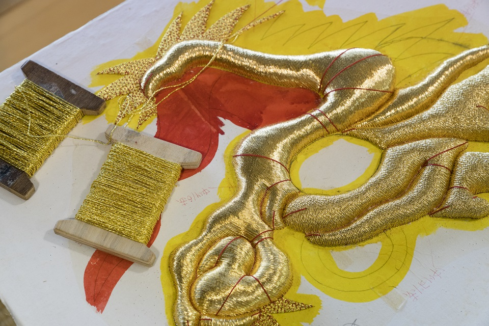
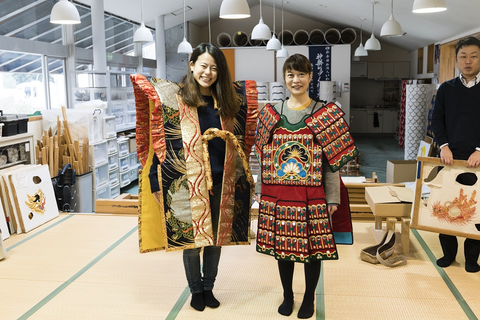
«Куваноки»
- Адрес
- префектура Симанэ, Хамада, Канаги-тё, Симокурабара, 1541-8
- Телефон
- +81 855-42-0039
- Часы работы
- 8:00–18:00
- Выходные
- среда
Черепица сэкисю-гавара
Красно-бурые крыши Ивами покрыты черепицей сэкисю-гавара, символом края. Её делает и черепичный завод «Камэдани», которому больше 200 лет. Здесь используют природное сырьё и обжигают черепицу при очень высокой температуре.
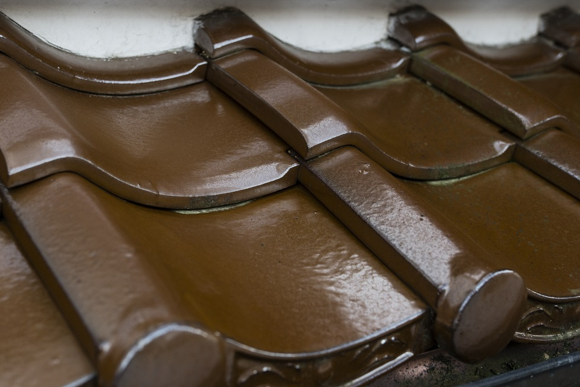
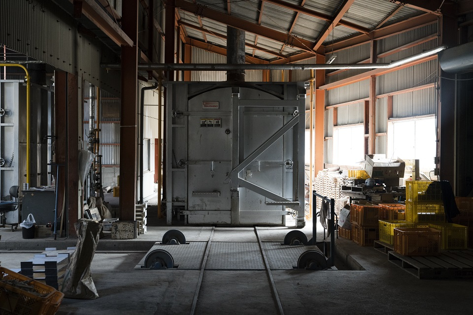
Сохраняя старое ремесло, завод придумал для черепицы новую жизнь: жаропрочную черепицу для готовки и посуду из черепичной глины. Всё это продают в выставочном зале.
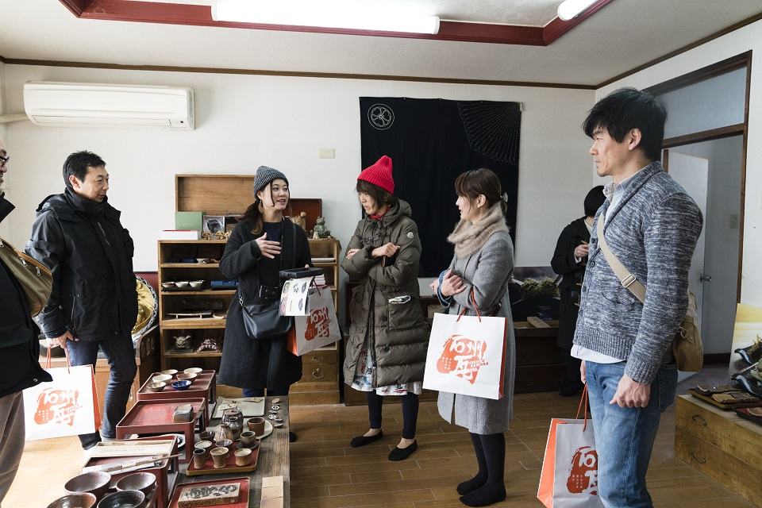
Черепичный завод «Камэдани»
- Адрес
- префектура Симанэ, Хамада, Нагасава-тё, 736
- Телефон
- +81 855-22-1807
- Часы работы
- 8:00–17:00 (галерея)
- Выходные
- суббота, воскресенье
Обед в «Кэнборо»
Обедать можно у вокзала Хамады в «Кэнборо». Ресторан готовит только свинину «Фуё» со своей фермы. Эта свинина отличается малым количеством калорий, холестерина и жира, а коронное блюдо ресторана это тонкацу из корейки.
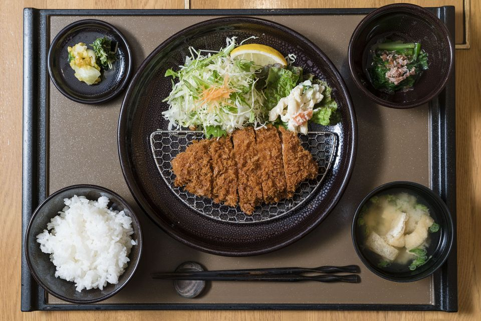
«Кэнборо»
- Адрес
- префектура Симанэ, Хамада, Курокава-тё, 4191
- Телефон
- +81 855-24-9909
- Часы работы
- обед 11:00–14:00, ужин 17:00–24:00
- Выходные
- вторник
Центр искусств «Гран Туа»
Последняя остановка ждёт в Масуде. Это Центр искусств и культуры префектуры Симанэ «Гран Туа». На его стены и крышу ушло около 280 000 черепиц сэкисю-гавара. Под одной крышей здесь работают Художественный музей Ивами и театр Ивами, и центр стал главной культурной площадкой края. Здание спроектировал архитектор Хироси Найто, автор Музея моря в префектуре Миэ и других музеев Японии.
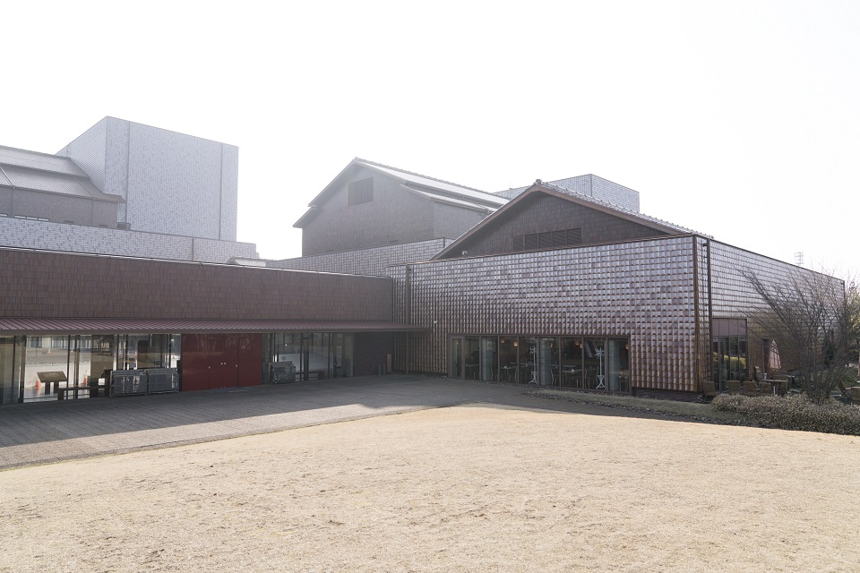
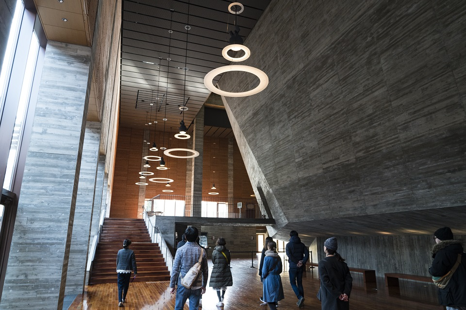
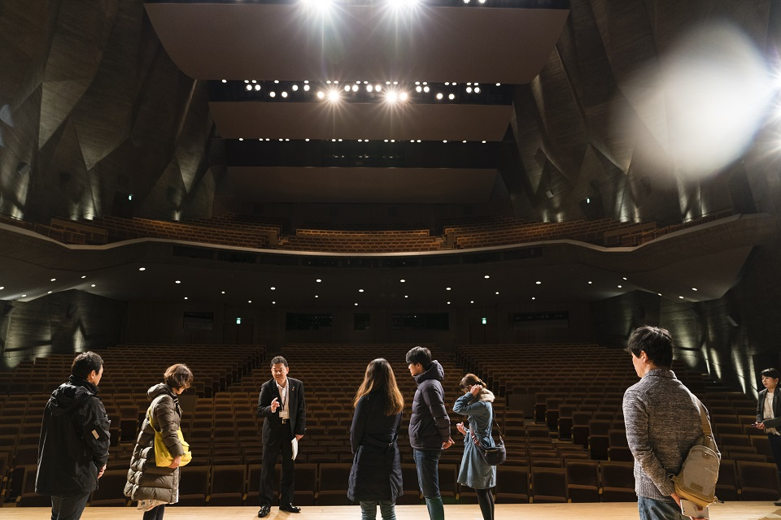
Центр искусств и культуры «Гран Туа»
- Адрес
- префектура Симанэ, Масуда, Ариакэ-тё, 5-15
- Телефон
- +81 856-31-1860
- Часы работы
- 8:45–22:00, музей 10:00–18:30
- Выходные
- 2-й и 4-й вторник месяца (если праздник, то следующий день), музей закрыт каждый вторник
Фото: Ацуси Ямахира.